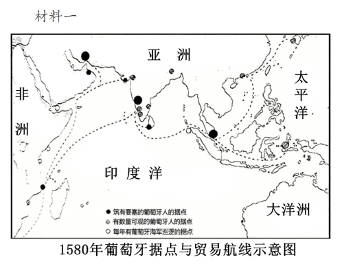

中外历史纲要下
【回归教材 · 世界近代史】精选高考真题
一、选择题
A．欧洲人长期对东方尤其是中国兴趣浓厚
B．马可·波罗指引西方人前往新大陆
C．马可·波罗激发欧洲人的中国情结
D．《马可·波罗游记》是中世纪欧洲畅销书
答案：C
材料核心在于《马可·波罗游记》对欧洲探险家、航海家的激励，强调它激发了欧洲人前往东方（中国）的强烈愿望，即"中国情结"，而非泛指"对东方兴趣浓厚"（A过宽）。B"指引前往新大陆"不符，D仅是材料局部信息。故选C。
A．激发"地圆说"的形成
B．表明世界殖民体系的确立
C．导致陆路贸易基本停滞
D．促进了贵金属的全球流动
答案：D
新航路和环球航路的开辟，使美洲白银大量流入欧洲、亚洲，推动了贵金属的全球流动。A"激发地圆说形成"逻辑颠倒（地圆说在前）；B"世界殖民体系确立"说法过大；C"陆路贸易基本停滞"与史实不符。故选D。
A．荷兰阿姆斯特丹
B．英国伦敦
C．意大利佛罗伦萨
D．奥地利维也纳
答案：A
17世纪荷兰是世界贸易中心，阿姆斯特丹工资水平在欧洲名列前茅；图中②号线在较长时期内保持较高水平，符合17世纪荷兰黄金时代的特征。故②代表荷兰阿姆斯特丹，选A。
A．传统商路将因新航路开辟而中断
B．价格革命会冲击欧洲的封建制度
C．"地圆说"的证实势必动摇传统信仰
D．欧洲商业格局将要发生重大变化
答案：D
威尼斯是地中海贸易枢纽，靠垄断东西方贸易获利。达·伽马绕道好望角开辟新航路后，贸易中心将西移大西洋沿岸，威尼斯的商业优势将丧失，欧洲商业格局将深刻改变。A"传统商路中断"表述过绝；B、C与材料主旨无关。故选D。
A．注重提升人的社会地位
B．复兴了希腊罗马古典文化
C．重视发挥人的聪明才智
D．推动了人文主义教育兴盛
答案：C
材料中学者向工匠（泥瓦匠、矿工）学习实践知识，体现了对普通人智慧的尊重和对人的才智的重视，这是文艺复兴人文主义精神的体现。A"提升社会地位"、B"复兴古典文化"、D"推动人文主义教育"均不符合材料核心。故选C。
A．文学艺术发展受制于王权
B．市民文学与骑士文学充分发展
C．国教会深受罗马教廷影响
D．宗教改革为文艺复兴作了铺垫
答案：D
材料逻辑：新教地位确立（宗教改革）→莎士比亚等文艺作品繁荣（文艺复兴），说明宗教改革为文艺复兴的兴盛创造了条件。A颠倒逻辑关系；B与材料内容不符；C与材料方向相反。故选D。
A．完善了天主教神学理论
B．偏离了文艺复兴的发展方向
C．强化了教会的宗教权威
D．奠定了宗教改革运动的基础
答案：D
"圣经人文主义"通过回归原版《圣经》，纠正拉丁文版本谬误，实质上动摇了教会对《圣经》权威解释的垄断，为后来马丁·路德等人的宗教改革（主张直接阅读《圣经》）提供了思想基础。故选D。
A．社会信息化有利于知识共享
B．英国已成为当时欧洲科技中心
C．电报为文化交流提供了便利
D．世界商业往来促进了科学发展
答案：D
材料关键词：数据"通过贸易路线送来"，说明世界贸易网络的形成为科学研究提供了全球数据支撑，即商业往来促进科学发展。A"社会信息化"是现代概念；C"电报"17世纪尚未发明；B"欧洲科技中心"无法从材料直接推断。故选D。
A．权力制衡
B．主权在民
C．理性判断
D．社会平等
答案：C
该思想家既倡导独立思考（摆脱传统权威），又主张在特定情境下理性地判断是否服从（如军事纪律），核心是运用理性进行判断。这体现了启蒙运动强调理性的核心精神。故选C。
A．有利于出版行业的兴起
B．引发了民众攻占巴士底狱
C．推动了启蒙运动的产生
D．冲击了封建君主专制统治
答案：D
"铁面人"逸闻在民众中塑造了专横权力的负面形象，激发了民众对君主专制的批判意识，有利于冲击封建专制统治。B"引发攻占巴士底狱"因果关系过于直接；C伏尔泰本身是启蒙运动代表，不是"推动产生"。故选D。
A．大陆法系原则在北美地区得到运用
B．北美独立运动影响欧洲政治文化重构
C．北美革命者融汇多种思想谋求独立
D．议会权力至上的理念在北美深入人心
答案：C
革命者将英国《大宪章》与启蒙思想（自然权利、社会契约、人民主权）相结合，体现了融汇多种思想资源谋求独立的特征。A"大陆法系"与材料无关；D与材料主旨相反（是反抗议会权威）。故选C。
A．强化了王权意识
B．颠覆了宗教神权
C．冲击了传统秩序
D．巩固了共和政体
答案：C
启蒙思想话语体系的传播，使民众接受平等、权利等新理念，为法国大革命爆发奠定了思想基础，有力冲击了封建等级制度与专制王权等传统秩序。D"巩固共和政体"在1789年之前并不存在。故选C。
A．民主共和制
B．君主立宪制
C．责任内阁制
D．等级君主制
答案：B
材料中英国议会批准成立英格兰银行（议会权力）、国王仍为股东且军费需国王印章（国王仍有一定权力），体现了议会与国王共同参与国家事务的君主立宪制特征。1689年《权利法案》确立君主立宪制，与时间吻合。故选B。
A．确立联邦政府的权威
B．防止外部势力威胁国家安全
C．保持各州的自治地位
D．调和南方与北方之间的矛盾
答案：A
梅森主张首都独立设置（不依附任何州），埃尔思沃斯反对各州支付议员薪酬，两者均强调联邦政府的独立性与权威，避免联邦政府受制于各州。故选A。
A．维护国家的统一
B．捍卫资本主义私有制
C．废除黑人奴隶制
D．解决农民的土地问题
答案：A
材料强调"联邦的实质"在于"自觉自愿的忠诚精神"，即真正的国家统一不仅是军事胜利，更是民心凝聚。"更根本的问题"是如何实现真正的、持久的国家统一。故选A。
A．无产阶级革命的必然性
B．德国经济落后的根源
C．法国大革命对欧洲的意义
D．德国资产阶级革命的保守性
答案：D
马克思以法国大革命和拿破仑法典（彻底废除封建制度）为参照，嘲讽德国资产阶级在1848年还在讨论赎买封建义务，体现出德国资产阶级革命的软弱与保守。故选D。
A．保留了大量传统文化因素
B．旨在推翻守旧的幕府统治
C．受东西方文明碰撞的影响
D．遵循"脱亚入欧"的战略
答案：C
材料中学者既主张吸收西方科技，又保留东方传统，体现了东西方文明碰撞对明治维新思想的影响。A"保留大量传统文化"不是材料论证重点；D"脱亚入欧"与材料强调东西并重相矛盾。故选C。
A．以技术革新应对工人反抗
B．组织联盟以镇压工人运动
C．通过工厂制提高劳动效率
D．用机器发明带动工业革命
答案：A
材料明确说明：工人罢工→雇主迫切要求发明机器→"随时能用机器对工人施以惩罚"，即雇主用技术革新（机器）来打压工人的罢工行动。核心逻辑是以技术应对劳动者反抗。故选A。
A．民族救亡运动的高涨
B．中国民族企业的发展
C．英国经济结构的调整
D．垄断资本主义的形成
答案：D
19世纪末20世纪初，第二次工业革命推动欧美各国进入帝国主义（垄断资本主义）阶段，美国、德国、日本等新兴帝国主义国家加大对华资本输出，英国在华公司比重相对下降。这是列强争夺中国市场格局变化的体现。故选D。
A．制冰技术取得突破
B．工厂制度普遍形成
C．消费市场不断扩大
D．食品生产水平提高
答案：C
冰块保存食物从个人发现发展为"重要商业活动"，实现远距离运输与出售，说明食品需求量增大，消费市场不断扩大。A材料无制冰技术；B与材料主旨无关；D食品生产水平无法从材料中直接得出。故选C。
| 来源 |
主要观点 |
| 某制造商 |
煤烟中的碳对人的健康不产生任何有害影响，完全能够遏制、消除有害气体 |
| 医学期刊《柳叶刀》 |
死亡不是与（由）浓雾相伴的寒冷气温引起的，而是浓雾中包含的化学物质引起的 |
| 伦敦市长 |
大工厂的烟囱竖起之后，疟疾就不再侵扰生活在周边的居民了 |
| 一流行刊物 |
强健的胸腔无法形成可以抵御煤烟攻击的保护，空气某种程度上已经不再适合呼吸了 |
A．环境污染问题严峻已成共识
B．城市化必然会带来公共卫生危机
C．社会医疗水平随工业化提升
D．工业化城市化过程中存在的问题
答案：D
材料中各方观点不一（有否认有承认），并未"达成共识"，排除A；B"必然"过于绝对；C与材料无关。材料总体反映了工业化城市化进程中环境污染、公共卫生等问题的客观存在及社会各界的不同态度。故选D。
A．西欧的社会思想逐渐趋同
B．马克思主义的科学性日益受到关注
C．社会主义思想在法国兴起
D．法国的社会结构多层次化已经形成
答案：B
《共产党宣言》从1906年的"未广泛流通"到1933年后的"迅速售罄""大量重印"，说明20世纪30年代面对资本主义危机（1929年大萧条）和法西斯主义威胁，人们对马克思主义的关注度大幅上升，其科学性日益受到重视。故选B。
A．组织发动
B．直接指挥
C．精神引领
D．经济资助
答案：C
马克思明确否认第一国际对巴黎公社的"组织指挥"，但肯定其支部"起了卓越的作用"，说明第一国际通过思想传播（马克思主义）为巴黎公社提供了精神引领，而非直接的组织或指挥。故选C。
A．强调拉美的种族歧视根深蒂固
B．认为拉美原住民文化已经消亡
C．主张加强拉美各国的文化交流
D．正视殖民遗产造成的现实困境
答案：D
拉美各国文化"相同性太强"，是西班牙、葡萄牙殖民统治留下的遗产（共同的语言、宗教、文化），使各国缺乏独特的民族认同，导致国家构建困难。学者正视的是殖民历史造成的现实困境。故选D。
A．摧毁了非洲传统的社会形态
B．埋下了非洲动荡不安的隐患
C．促进了非洲资产阶级革命的兴起
D．推动了非洲民族解放运动的高涨
答案：B
列强无视非洲既有社会形态，人为用直线划分边界，导致同一民族被分割到不同国家，或不同民族被强行并入同一国家，为后来非洲的民族冲突、领土争端和政局不稳埋下了深重隐患。A"摧毁"说法绝对；C、D不符合题意。故选B。
A．通过文化宣传美化殖民历史
B．为解决国际争端开辟新途径
C．炫耀比利时强大的工业实力
D．为开展三角贸易寻找合理性
答案：A
展馆通过"文明"与"发展"的叙事，雕像以传教士"救世主"姿态俯视非洲人，将殖民侵略包装成"文明教化"，典型地通过文化宣传手段美化殖民历史，掩盖殖民掠夺的本质。故选A。
A．拉丁美洲民族独立运动兴起
B．大西洋三角贸易已走向衰落
C．西、葡殖民优势逐渐被打破
D．倾销工业品是主要掠夺手段
答案：C
据图中美洲和非洲殖民地分布，有英、法、荷等国，说明原来西、葡对美洲的殖民垄断优势已被英、法、荷等新兴殖民国家所打破。这是17世纪以后殖民格局的特征。故选C。
A．国家认同引发社会变革
B．思想启蒙激发民族意识
C．独立运动摧毁殖民体系
D．革命理念得到广泛传播
答案：B
《人权宣言》的传播→秘密结社→"美洲人"认同形成，体现了启蒙思想的传播激发了拉丁美洲的民族意识觉醒。C"独立运动摧毁殖民体系"尚未发生；D"广泛传播"与"秘密印刷"矛盾。故选B。
A．传统棉纺织业得到迅速发展
B．民族解放运动取得初步胜利
C．民族资产阶级获得广泛支持
D．经济发展推动民族意识增强
答案：D
材料逻辑：棉纺织工厂增多（经济发展）→国货博览会→提拉克呼吁民族自主，体现了经济发展（民族工业兴起）推动了印度民族意识的觉醒与增强。A"传统棉纺织业"与"工厂"不符；B民族解放运动尚未胜利；C材料无法说明"广泛支持"。故选D。
①促进欧洲文化的重构 ②客观上利于埃及民族意识觉醒 ③在本土发展举步维艰 ④导致西方主导的殖民体系崩溃
答案：D
②埃及本土学者研究本民族历史文化，客观上有助于民族认同和意识觉醒——正确。③埃及本土的埃及学两度被法国人打压关闭，说明在本土发展举步维艰——正确。①材料无法体现"欧洲文化重构"；④"导致殖民体系崩溃"结论过大，材料无此体现。故选D。
二、非选择题
材料一

——据[美]彭慕兰等《贸易打造的世界：1400年至今的社会、文化和世界经济》
【图示要点】葡萄牙据点主要分布于：西非海岸（如圣多美）、东非海岸（如莫桑比克、蒙巴萨）、印度西海岸（果阿）、东南亚（马六甲）、中国沿海（澳门）等地，均沿海岸线或重要海峡分布。
材料二 在亚欧大陆，葡萄牙人率先开启了海洋帝国的路线，建立了一连串据点。荷兰、英国后来居上，其中一个秘诀是成立"东印度公司"。到18世纪的时候，英国东印度公司就开始不断索要地盘。英国人在印度各地，实行双重管理制度，即保留土邦王公，地方事务由原有的地方政府管理，东印度公司负责维持治安，征收土地税。但东印度公司的兴趣需要是攫取财富，除了税收和贸易，东印度公司还进行赤裸裸的直接搜刮和抢劫，从18世纪后期到19世纪初，在印度共榨取了10亿英镑。到19世纪中叶，东印度公司被解散，印度进入英国政府直接统治时期。从葡萄牙、西班牙、荷兰、法国，一直到英国，这些海洋帝国后来都把大面积的土地视作重要的生命线。它们到亚非拉地区，不但为了贸易，更是为了攫取更多的资源。由此，它们之间的竞争日益加剧，最终导致了一系列帝国主义战争。
——摘编自葛兆光主编《从中国出发的全球史》
（1）根据材料一，概括葡萄牙据点的分布特征，结合所学，分析这些据点形成的主要原因。
【第（1）题参考答案】
分布特征：
①主要分布于沿海地区（海岸线），呈点状分散分布；
②集中于非洲西海岸、东海岸，印度洋沿岸及东南亚要道，即从西欧绕过非洲通往亚洲的航线沿线；
③多位于重要海峡、航运枢纽或贸易港口附近（如马六甲海峡、果阿、澳门等）。
形成原因：
①15世纪以来，葡萄牙积极推进海外探险，率先开辟绕非洲好望角通往亚洲的新航路；
②葡萄牙拥有较先进的航海技术和造船技术，国家给予大力支持（王室资助）；
③葡萄牙以控制海上贸易为目标，沿航线建立据点以保障商船补给、维护商业利益；
④葡萄牙通过武力征服、谈判和条约等方式，在沿海要地强行建立据点。
（2）根据材料二，指出英国东印度公司抢夺印度财富的主要手段。综合材料一、二，结合所学，概括"海洋帝国"扩张对19世纪世界格局的影响。
【第（2）题参考答案】
主要手段：
①征收土地税（赋税剥削）；
②垄断贸易（商业控制）；
③直接搜刮和抢劫（武力掠夺）。
对19世纪世界格局的影响：
①推动了资本主义世界市场的形成，亚非拉地区被纳入世界经济体系（但处于从属地位）；
②加速了西方列强瓜分世界的进程，形成了以欧洲为主导的殖民体系；
③列强之间争夺殖民地的矛盾激化，导致帝国主义战争频发，加剧了国际紧张局势；
④殖民地半殖民地人民遭受残酷剥削和压迫，亚非拉民族解放运动逐渐兴起；
⑤客观上推动了被殖民地区资本主义经济的有限发展和民族意识的觉醒。
史学家张荫麟先生根据东西方历史学实践，提出撰写通史的五个选材标准：
| 标准 |
说明 |
| （一）新异性的标准 |
"内容的特殊性"，即在历史上是否具有新意。史事愈新异则愈重要。 |
| （二）实效的标准 |
史事直接或间接影响于人群的苦乐愈大则愈重要。 |
| （三）文化价值的标准 |
即真与美的价值，文化价值愈高的事物愈重要。 |
| （四）训诲功用的标准 |
完善的模范或成败得失的鉴戒，训诲功用愈大的史事愈重要。 |
| （五）现状渊源的标准 |
了解现状须追溯其由来，史事与现状关系愈深则愈重要。 |
请任选一个标准，在古代、近代、现代任选一个历史时期，写一段历史。
（要求：明确写出所选标准，自拟题目，选材符合标准并加以阐释，符合逻辑，表述清晰）
【参考示范答案（示范一：现状渊源标准·近代）】
所选标准：（五）现状渊源的标准
题目：工业革命与当今世界格局的根源
18世纪中期，英国率先发生工业革命，蒸汽机的广泛使用推动了工厂制度的建立，机器大生产取代了手工劳动。工业革命深刻改变了世界面貌：它推动了资本主义世界市场的形成，使英国成为"世界工厂"；促进了交通运输革命（铁路、轮船），密切了世界各地的联系；同时加速了列强对外扩张，亚非拉地区被迫卷入世界经济体系。
这一历史进程与今日世界的关联极为深刻：当今南北发展不平衡，发展中国家在国际分工中处于不利地位，根源正在于近代工业革命所奠定的不平等经济格局；环境污染、气候变化等全球性问题，也与工业文明的扩张密不可分。了解工业革命，是理解当代全球化困境与机遇的必要前提。
——此段历史选材符合"现状渊源"标准：工业革命是今日世界格局最重要的历史根源之一，与现状关系极深，故选材适当。
【参考示范答案（示范二：实效标准·近代）】
所选标准：（二）实效的标准
题目：新航路开辟——改变世界的大航海时代
15世纪末至16世纪初，葡萄牙、西班牙航海家相继开辟了通往亚洲和美洲的新航路。这一历史事件对人类苦乐的影响极为深远：其一，世界贸易扩大，欧洲商品经济得到极大促进，推动资本主义发展；其二，引发"商业革命"和"价格革命"，冲击了欧洲封建制度；其三，美洲原住民遭受毁灭性打击，数以千万计的非洲人被贩卖为奴，人类蒙受巨大苦难；其四，物种在全球范围内交流（哥伦布大交换），改变了世界各地的饮食结构和人口分布。
可以说，新航路的开辟是人类历史上影响最广、最深刻的事件之一，直接关系到此后数个世纪亿万人的命运。按实效标准，此为极重要的史事。